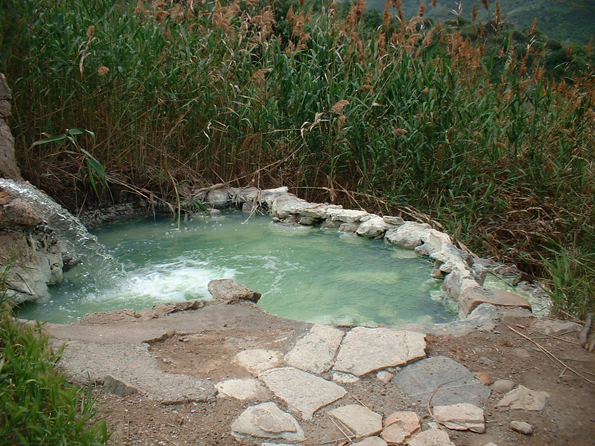

Bagni di sclafani

ITALIANO - Manifestazione sorgentizia termale attribuibile alla presenza di una faglia diretta con temperature medie di circa 32°. Limitrofa scaturisce una sorgente salina fredda.
ENGLISH - Thermal spring manifestation attributable to the presence of a direct fault with average temperatures of about 32°. A saline spring cools off nearby.